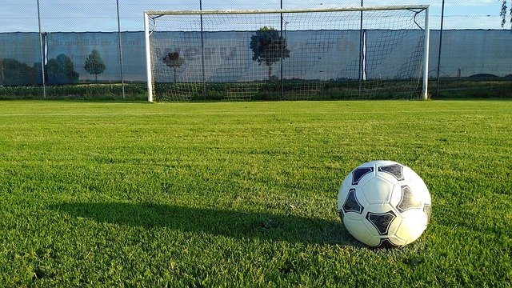
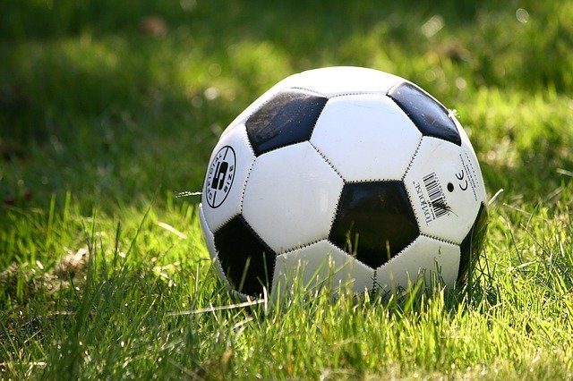

The Most Important Of All Football Matches Played Ever - The Death Match
Football fans who aspire to catch all live coverage of UEFA Champions League matches, often by spending sleepless nights, are aware of a Ukrainian football team Dynamo Kiev, which hails from Kiev the capital city of the country. There aren't many who are aware of the remarkable history of the club , and what happened to its players following their win in a game convincingly against German Army Football Team when Nazis attacked the country during the Second World War.
These were the early days of Dynamo Kiev (Before Nazi Invasion)
This Kiev founded club was established in 1927. It was initially an amateur team as a part of Dinamo, a nation-wide Soviet Sports Society and later it was officially funded and supported through NKVD which was an official Soviet Secret Agency. In the 1930's, Ukraine was terribly affected under the leadership of Stalin since he was always concerned about a possibility of Ukrainian breaking away of the Soviet Union Empire. This is why a lot of attention was given to suppress any nationalist movements that could have resulted in the deaths of thousands and millions of citizens of Ukraine miserable. Each and every city was controlled by the Soviet police, known as the Secret Police and they would investigate every move made by any citizen from a suspect viewpoint. The innocent citizens were rounded up sometimes deported, and then executed by them for making mistakes just as easy as being late at work , or talking to the foreigners or for quarrelling with their neighbors etc. Even Ukrainian government officials and police personnel were not spared this hellish crime. Furthermore, Stalin's brutal Farming policy shattered the Ukrainian economy and resulted in a great famine for where 14 million Ukrainens lost their lives. A sense of fear of terror, hatred, and resentment loomed in those days, and there was no any hope for the Ukrainians.

Football was like a breath of fresh air during the days of uncertainty and anxieties. At the time, Football was extremely popular as a sporting activity in all over Soviet Union and it was easy for anyone to reserve a soccer match ticket and to be engrossed in the thrilling moments of the game and to be awed by every minute. For them, it was a moment of relief from a very stressful and stressful environment and the constant fear of deportation or execution. The most popular clubs in the Soviet Union were Dynamo Moscow and Spartak Moscow, two clubs that were based in Moscow and also in the field of Football, Ukrainians had something to cheer about : the achievements from Dynamo Kiev. The fiercely contested games played against Dynamo Kiev and those two clubs from Moscow were followed by a large number of supporters and often they defeated the Moscow Clubs to take the Soviet Championship and also to break the Moscow Dominance in the field of football. The games held with Dynamo Kiev were not just simple games, but also included National Pride. This club is often regarded as unofficial Ukrainian National Team by the Ukrainian Government. The team was sponsored by the government. They participated in the very first "Soviet Championship" which took place in 1936. The team came second after battling with all the tough adversaries. In 1937 and 1938, they won the championship in the top 3 and 4 position respectively. In 1938 campaign, they scored a record 76 goals which is an impressive feat considering the hardship they suffered and the gruelling conditions they were forced to endure. They did not achieve their full potential over the following two seasons (1939 and 1940) and also in the following season (1941) they were playing well as a unit till the 4th game but following that, the Nazi army invaded the whole Soviet Union on 22nd June, 1941. يلا شوت
Dynamo Kiev during Nazi Invasion
When the Soviet Union's Red Army lost in the conflict with Nazis certain Dynamo Kiev players registered themselves in the army and were sent on the battlefield to fight for their nation and to save their homeland from foreign invasion. After 3 months of horrible bloodshed, finally Nazis took full control over the city of Kiev. The Dynamo players who joined the army were arrested and labelled "Prisoner of War" and sent to the Prison Camps. The Prison Camps were deficient in food and water and all prisoners were forced to live in a short enclosure earmarked by barbed wire fences. After Kiev fell to the Germans in 1939, the city was witness to the most horrific scene of devastation along with destruction and death for one year (which included the execution of 33,771 Jewish men, women and children in just 2 days on 29th and 30th September and by the end of 1941 over 100000 Ukrainians suffered death by shooting at by Nazi army or succumbed to starvation). But some of Dynamo Kiev players were fortunate to be freed from prison camps, and they came back to the Kiev city in search of work. The Dynamo story began on an optimistic note.
Bakery Number 3
Iosif Kordik, a die-hard supporter of Dynamo Kiev, was the manager of the huge Bakery Number 3, in Kiev when Nikolai Trusevich, the tall goalkeeper of the team , came home to Kiev for work and the bakery offered him a sweeper' s job in the bakery. In those days, people who were released from prison camps , were not granted a permit for work or the right to reside within an apartment. This is why offering a work to Nikolai was illegal but Iosif the manager was thinking of some other idea in mind. The enthusiastic soccer fan dreamed of creating a strong Bakery Football Team and gave the responsibility of finding quality footballers as well as his old teammates over to Nikolai. The always enthusiastic goalie started his hunt for former teammates by walking through the streets of Kiev and then slowly one by one, he was able to find nine of his former Dynamo Kiev teammates (they were Nikolai Korotkykh, Mikhail Svyridovskiy, Mykola Korotkykh, Oleksiy Kilimenko, Fedir Tyutchev, Mikhail Putistin, Ivan Kuzmenko, Makar Goncharenko, Makar Honcharenko) and as well as some of the players of Lokomotiv Kiev (Vladimir Balakin, Vasil Sukharev, and Mikhail Melnyk). In the following months, during the days of uncertainty, all team members were gradually moved to the Bakery 3, where they were provided with vital food, shelter as well as jobs. Then the players who worked inside the cafeteria, many who were suffering from malnutrition, started to train though they were exhausted from their 24- hour work. They began to believe they had the potential to be an extremely powerful team. The tall and skilled goalie Nikolai has given their team an official name "Football Club Start (F.C Start)" as participation in football and getting job, shelter in the Bakery Number 3 allowed them to live a different life previously defined mostly by fear, terror and uncertainty.

The Journey to F.C Start
They played their first game in the local league coached by Georgi Shvetsov who was former professional footballer and sports trainer. The first opponents of Start were Rukh Shvetsov's personal team. They won the game by a margin of 7-2 though they haven't got appropriate footwear, as well as football shirts. Shvetsov became extremely upset and turned to the German authority and asked them to ban F.C Start from training at Rukh's Stadium. In the absence of training facilities they won all matches by huge margins.
They beat the Hungarian Garrison by 6-2 on 21st June 1942. Then they beat the Romanian Garrison by a huge advantage of 11-1 on 5th July. The win boosted the morale of all the Ukrainians who felt low in morals and disappointed over the events that had afflicted them. They would show up in large numbers, to watch their favourite team mercilessly crushing the other teams coming from the elite regiments of power.
Their winning streak continued , as they again won by a margin of 9-1. The military railroad workers' team on the 12th and 17th July, they also defeated PSG (a German unit) by an obscene 6-0. However, slowly the German authorities began to become irritated by the dominance of Ukrainians in soccer. They could also observe the enthusiasm that the team's football players generated within the mass of people and they sensed that this enthusiasm could pose serious danger to the foundations of German dominance. This excitement could trigger an instant freedom movement. On 19th July FC Start won against MSG.Wal which was a Hungarian team, by a margin of 5-1. They beat MSG.Wal in a rematch on the 21st July with a slim margin of 3-1. To avoid the excitement for FC Start in the football field in the first place, the German Authorities formed a team dubbed Flakelf within the same division and the players on the team were physically superior to the players of any other team. When FC Start was playing their last match against MSG Wal, the Flakelf team was playing Rukh (against the team from which FC Start started their incredible journey) and Flakelf almost demolished Rukh and there was speculation that the Flakelf team was not losing any matches before.
So on 6th August, 1942, FC Start met Flakelf in the football field . To the delight of the German Officials, FC Start won the match convincingly by a huge margin of 5-1. Now the German Authorities took the matter seriously and they scheduled a second match between the two teams on the Sunday of 9th August at Zenith Stadium. The posters were erected on these walls in order to promote the match between the two teams.
Then: the Game of Death
On Sunday, August 9th, fans gathered in large numbers to the Zenith Stadium to watch the match between the newly revived FC Start and the yet unbeaten Flakelf soccer team. The atmosphere was very much tension-filled and it required an immense effort by both the Ukrainian and German police to manage the massive crowd. As the match was about to begin when the referee for the game, a SS officer arrived at FC Start's clubhouse and told them to salute the German team in the same manner as they do with a salute, and saying "Heil Hitler". The FC Start footballers already sensed that the person who was referring the match would be biased towards them. When the referee left the area of the dressing room, there was an exuberant atmosphere. They clearly understood that the authorities had planned in such a way that if somehow they managed to win the game, they'll face dire consequences. Some of them thought of taking the game off the table, and some players suggested playing a decisive game. One Romanian representative also visited the locker room and congratulated them for their achievements to the top of the league. He also offered them a wish for success. Then, all players unanimously decided to go out on the field to play football. yallashoot
Just minutes before the kick-off the strong and stout Flakelf team gathered at the half-line, and they gave a Nazi Salute "Heil Hitler". Then it was the turn of the Start players, and they chose not to perform the Nazi Salute and instead of doing so, they lowered their arms back to chest and shouted a Soviet slogan called 'FizcultHura!' that translates to "Physical culture hooray!". The chant received a intense response from everyone in the vicinity of the stadium. This angered the German Authorities to a greater extent.
Just as it was thought the ref completely ignored any foul made by the Flakelf team, and they targeted Start goalie Nikolai to assault physically. After sustaining blow after blow at the start of the game, a Flakelf forward smashed Nikolai in the head leaving Nikolai almost unconscious. While he was recuperating of the injury Flakelf scored ahead 1-0. The Flakelf team was pulling the jerseys, playing dangerously, and as they tackled they were targeting players instead of ball but these tackles were not able to get any attention from the official. Despite these facts, FC Start scored a amazing equalizer on an open kick from the winger, Kuzmenko. This goal was met with a huge applause from the crowd of fans who were previously screaming abuse at the Flakelf team over their poor performance. After the equalizer Goncharenko another Start forward, dribbling through the vicious Flakelf defence , scored another stunning goal. They went ahead. In the final minutes of interval, they scored a goal, and the scoreline read 3-1.
At halftime, the team was thrilled to have overpower the tough challenges faced by them in the match and the scoreline was also in their favour. Yet, Shvetsov, a former football player, suddenly appeared to the locker room and told them to protect themselves from being beaten by their opponents. Soon after he left another SS officer arrived and told them that although they're a good team but they must lose the game otherwise they will get harsh penalty at the hands of the Authority.
Amidst the confusion and in a state of indecisiveness the Start players began with the second part of the match and this time it was it was Flakelf team, fearing a crowd disturbance they played with less force. Start as well as Flakelf each scored two goals and Start was ahead at the time 5-3. After that, Klimenko, a Start player, landed the ball in the midfield, and he fought off the entire German defense and walked towards the penalty box. In the end, instead of moving the ball towards the an goalline, the player turned and kicked the ball back towards the centre circle. It was a complete humiliation for the Flakelf team, since the defender had the option not to score against them. Soon after that the official blew his final whistle.